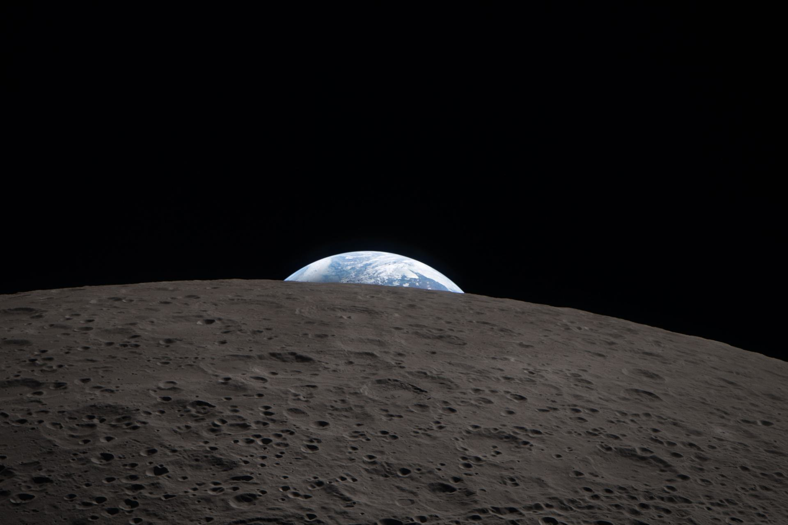

NASA · Artemis IIMissão recenteTripulada · 2026
Artemis II: de volta à Lua, com gente a bordo
Em abril de 2026, quatro astronautas voaram ao redor da Lua no primeiro sobrevoo lunar tripulado em mais de 50 anos. A missão durou pouco mais de 9 dias, do lançamento, em 1º de abril, ao pouso no Pacífico, em 10 de abril.
- Reid Wiseman · NASA
- Victor Glover · NASA
- Christina Koch · NASA
- Jeremy Hansen · CSA
ArtemisVer detalhes